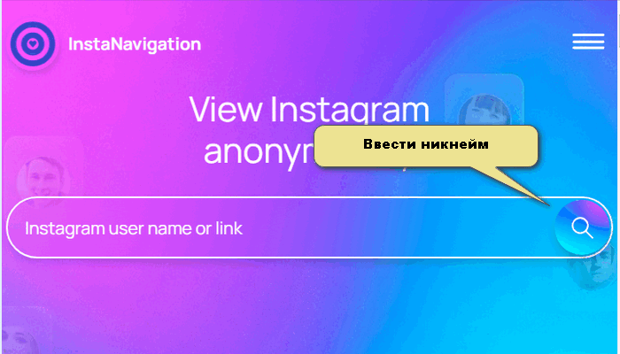
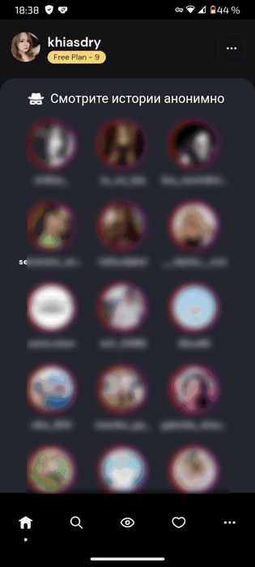
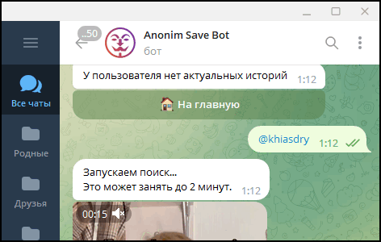

Как смотреть за Историями бывшего в Инстаграме анонимно: 4 способа

Если бывший скрыл Истории в Инстаграме*, то нужно определить как именно: для определенного человека или закрыл аккаунт. В первом случае помогут онлайн-сервисы, создание аккаунта и мобильные приложение, открывающие анонимный просмотр. Во втором – только дополнительная учетная запись.
Как смотреть Сторис, если парень их скрыл
Когда близкий человек скрывает публикации и Истории – возникает масса вопросов, касающихся того, что размещено на фото и видео. Чтобы избежать недопонимания, стоит воспользоваться парой ухищрений. Все способы, как смотреть скрытые Сторис:
- ИнстаШпион. Сервис не только показывает Истории, но также открывает доступ к списку гостей, взаимных лайков и комментариев, подпискам/подписчикам;
- мобильные приложения и боты в Телеграме. Направлены только на скачивание постов, Историй, IGTV и Reels;
- создание дополнительного аккаунта. Поможет, если нужно подписаться на закрытый профиль.
Определить, что парень скрыл посты только от определенного человека – просто. Попросить друзей перейти на страницу к этому человеку и проверить наличие новых постов. Если аккаунт вовсе закрыт, то появится соответствующее сообщение. Посмотреть такой профиль возможно только после подписки и подтверждения владельцем.
№1 Инсташпион: комплексная слежка
С помощью сервиса Инсташпион можно наблюдать за любыми действиями, совершенными владельцем другого аккаунта. Чтобы подключить чужую страницу не нужен логин и пароль. Инташпион анализирует лайки, комментарии и даже посетителей аккаунта без привязки. Как работает сервис:
- Пользователь заходит на сайт и видит сверху надпись: «Попробовать бесплатно».
- В пустое поле рядом нужно ввести никнейм – подождать, пока площадка обработает информацию.
- Выбрать пункт: «Обновить базу данных».

№2 Онлайн-сервисы
Помимо Инсташпиона есть и другие сервисы, которые направлены на наблюдение за чужими страницами, просмотр Историй. Например:
- instanavigation. Указать никнейм, посмотреть последние опубликованные изображения;
- insta-stories-viewer. Работает по такому же принципу, позволяя скачивать Сторис;
- storiesig. Вписать никнейм с помощью ссылки или через значок «@».
Сервисы схожи по механизму работы:
- Перейти на выбранный сайт – указать в строке поиска никнейм.

- Подождать, пока прогрузится аккаунт – посмотреть недавно опубликованные Сторис.
Далее, пользователь сможет просматривать посты, переходить в Актуальное или скачивать публикации. Такие сервисы не направлены на постоянное наблюдение, в сравнение с Инсташпионом. И выполняют всего три функции: просмотр Историй, Актуального и загрузка просмотренного контента. Для максимальной точности рекомендуется использовать instashpion.ru
№3 Скачать Историю анонимно на телефон
Мобильные приложения не отстают в количестве способов для просмотра Историй анонимно. Пользователь может подключиться к платным и бесплатным сервисам, наблюдать за Сторис ежедневно или же заходить только в определенное время.
- Storify. Доступен просмотр и скачивание Историй даже из приватных аккаунтов;
- Storysaver+. Можно смотреть контент других пользователей даже в бесплатной версии;

- тестовая версия приложения InstaBro. Доступна для загрузки через Телеграм-бот «IGSpyBot».
Смотреть Сторис с помощью Storify:
- Скачать и установить приложение из Play Market.
- Авторизоваться с помощью страницы в Instagram*.
- Откроется список подписок, которые можно просматривать анонимно.
В бесплатной версии отсутствует поиск других людей, на которых владелец аккаунта не подписан. Зато можно смотреть закрытые страницы. В StorySaver+ доступен просмотр биографии и скачивание аватарки у человека, на которого не оформлена подписка. В платной – можно смотреть закрепленные Истории.
№4 Телеграм-боты для Инстаграма*
Смотреть скрытые Истории в Инстаграме* помогут Телеграм-боты, где достаточно ввести никнейм и посмотреть последние записи. Но проблема в том, что начиная с 2023 года количество бесплатных ботов уменьшилось, поэтому просмотр не всегда бесплатный. ТОП-3 ботов для просмотра Историй:
- IGSpyBot. Есть тестовый период с подпиской на несколько аккаунтов и их регулярным мониторингом;
- Anonimsavebot. В течение суток можно смотреть Истории любых пользователей;
- instagent_bot. Платный, с выбором тарифного плана и возможностью просматривать весь профиль человека.
С помощью AnonimSaveBot можно смотреть Истории: видео или фото-материалы:
- Зайти в мессенджер – вписать ID-бота.
- Нажать: «Старт» - вставить ссылку на страницу пользователя.

- Выбрать тип контента, который нужно разблокировать.
- Посмотреть последние опубликованные Истории.
Чтобы сохранить изображение или видео на телефон: открыть материал полностью и нажать сверху: «Сохранить в галерею». Медиафайл должен быть полностью прогружен, иначе пункт с загрузкой не появится.
Показывает ли в Сторис гостей страницы
Истории в Инстаграме* не показывают гостей, но отображают зрителей. То есть тех, кто просматривал Сторис и не важно: был подписан или нет. Первыми в списках зрителей будут близкие друзья и пользователи, которые регулярно реагируют на контент, часто посещают страницу. Помимо зрителей, Истории у владельцев бизнес-аккаунтов отображают:
- выходы и перелистывания. Кто из посетителей вышел из Сторис до того, как одна закончилась;
- из какого раздела перешел. Пользователи могут найти аккаунт из раздела: «Интересное» или по добавленному хештегу;
- география и половая принадлежность.
Эти данные необходимы владельцам блогов, которые смогут с помощью статистики улучшить контент или проанализировать, какие темы наиболее интересны подписчикам, посетителям.